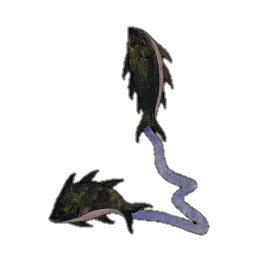

صور الكوكبات السماوية
"صور الكوكبات الشمالية"
الدب الأصغر

الدب الأكبر

التنين

الملتهب

العوّاء

الإكليل الشمالي

الجاثي

السلحفاة

الدجاجة

ذات الكرسي

حامل رأس الغول

ممسك الأعنة

الحوّاء و الحيّة

السهم

العقاب

الدلفين

قطعة الفرس

الفرس الأعظم

المرأة المسلسلة

المثلث

"صور الكوكبات الجنوبية"
قيطس

الجبار

النهر

الأرنب

الكلب الأكبر

الكلب الأصغر

السفينة

الشجاع

الباطية

الغراب

قنطورس و السبع

المجمرة

الإكليل الجنوبي

الحوت الجنوبي

"صور الأبراج الإثني عشر"
الحمل

الثور

التوأمان

السرطان

الأسد

العذراء

الميزان

العقرب

الرامي وهو القوس

الجدي

الدلو و هو ساكب الماء

الحوت

ذِكْر الميزان
قال ناظم الأرجوزة أبو علي الحسين بن عبدالرحمن الرازي، ابن الفلكي الشهير عبدالرحمن بن عمر الرازي المشهور بالصوفي:
-
يتبعها كواكب الميزانمنها الزبانا وهما نجمان
-
كلاهما ذو رونق ولمحِبينهما في البعد قيد رمح
-
هما جميعاً كفتا الميزانوبيد العقرب يعرفان
-
وبزبانا الصيف أيضاً لقباإذا البطين طالعاً قد غربا
-
يتلوهما الإكليل وهو أنجمثلاثةٌ جميعهن مظلم
-
أحدها من أنجم الميزانبالبعد من منغرز اللسان
-
وكوكب من اللواتي أخرجتعن صورة الميزان لما رصدت
-
وكوكب فوقهما لم يرصدعن الذين رصدا لم يبعد
-
واختلف الرواة في الإكليلوكلهم يخبط في تضليل
-
إذ حسبوه الأنجم اللواتييعرفهن أكثر الرواةِ
-
بجبهة العقرب وهي أنجمثلاثة كشهب تضطرم
-
وجَهل من يزعم هذا واضحلأن عنهن الزبانا نازح
-
والقلب منهن قريب فالقمرإن فارق الكفّة في السير قصر
-
مسيره عن أن يحل الجبهةكذاك إن سار وولى وجهه
-
عن جبهة العقرب نحو قلبهاجاوزه لما يرى من قربها
-
من كوكب القلب الذي ذكرنافليس الإكليل سوى ماقلنا

الزبانى
وبعد العذراء تطلع كوكبة الميزان، ومنها نجمان يسمّيان الزبانى، وذلك لأنهما عند العرب من صورة العقرب ويمثلان الزبانيان وهما قرنا العقرب.
وكلا هذين النجمين له رونق ولمح، لأنهما من النجوم اللامعة، وبينهما مايقرب من رمح، والرمح قريب من أربعة عشر درجة قوسية، ولم يذكر الصوفي في كتابه مقدار البعد بين النجمين ولكن الدينوري ذكر أنها خمسة أذرع وهو مايقابل حوالي أحد عشر درجة، والمسافة بينهما بمقاييس العصر الحديث حوالي تسع درجات قوسية. هذان النجمان عند الروم هما كفتا الميزان، وعند العرب يعرفان أيضاً بيدي العقرب.
ويلقبان أيضاً بزبانى الصيف، لأنهما سقوطهما زمان الحر، أوائل شهر مايو. قال ذو الرمّة:
أي أن وقت سقوط الزبانى تهب به ريح البوارح الحارّة التي تزفزف أي تمر على حطام النبات اليابس فيسمع له صوت، وتجعل الماء في الأصناع والخبرا يجف وينضب. والأصناع جمع صنع، وهي محابس الماء والخبرا وهو جمع خبرة، مثل مانعرفه الآن بالخبراء وهي المنخفض من الأرض فيه سدر ويجتمع فيه الماء.

والزبانى تسقط حين يطلع البطين، فهما رقيبان متقابلان. وأما طلوعها فجراً فهو يوافق آخر الوسمي. قال الشاعر يصف مرتعاً خصباً:

الإكليل حسب رأي الصوفي
وهنا يصف لنا ابن الصوفي نجوم الإكليل، حيث يجعلها ثلاثة نجوم خفيّة على شكل قوس، أحد هذه النجوم من التي داخل صورة الميزان وهو الذي على الطرف بعيداً عن مكان اللسان الذي يحمل منه الميزان، والثاني من نجوم كوكبة الميزان التي هي خارج الصورة والثالث من النجوم التي لم يرصدها بطليموس، وأهمل ذكرها. وبهذا يكون الإكليل ثلاثة نجوم غير الثلاثة اللامعة المشهورة. وهذا الرأي في نجوم الإكليل هو رأي الصوفي الأب.

الإكليل حسب الرواة
يقول ابن الصوفي أن الرواة تخبطوا في تحديد نجوم الإكليل، ويحسبون أنه هو النجوم الثلاثة الشهيرة التي على جبهة العقرب، ومن لمعانها شبهها بأنها كالشهب المحترقة.
سبب اختلاف الصوفي مع الرواة في الإكليل
ويبرر ابن الصوفي رأيه ويبين خطأ الرواة بقوله أن الثلاثة الشهيرة بعيدة عن الزبانى، وقريبة من القلب. فإذا كان القمر مقارناً لكفّة الميزان أي مقارناً للزبانى، فإن مسيره لليلة يقصر به دون جبهة العقرب. وإذا سار من عند جبهة العقرب التي يعتقد الرواة أنها الإكليل، فإن مسيره يجاوز به القلب وذلك لقرب القلب من الجبهة، ولهذا السبب فإن الإكليل هو تلك النجوم الثلاثة الخفية التي ذكرها، والتي تقع على المنصف بين الزبانى والقلب.


وأعتقد أن الإكليل هو ماذكره الرواة، وهو الثلاثة اللامعة التي على جبهة العقرب، وحتى لو كانت ليست على المنصف بين الزبانى والقلب، فالظاهر أن العرب تتخذ علامة واضحة سواءاً كان القمر يحاذيها أو يقصر عنها فهم يعرفون من خبرتهم مدى قصوره عن هذه العلامة البيّنة. ولأن الصوفي من أصحاب الحساب والقياسات الصارمة الدقيقة، رجّح أن يكون الإكليل غير الثلاثة المذكورة، , وليست المسافة بين المنازل الأخرى تساوي مقدار سير القمر في ليلة، بل هي على التقريب.
أفضل أوقات رؤية كوكبة الميزان
كوكبة الميزان تطلع شرقاً بعد غروب الشمس، وترى طوال الليل في أوائل شهر مايو، ولذلك فإن أفضل الأوقات لرصدها هو شهور مايو ويونية ويولية.